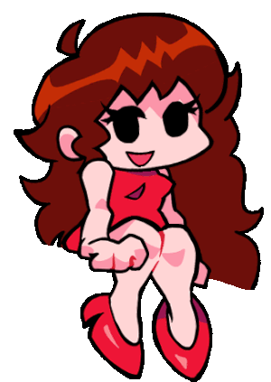
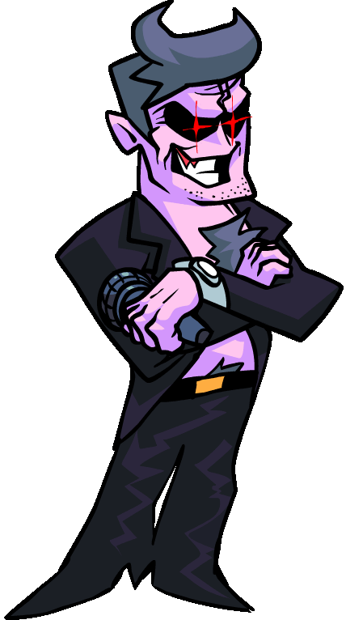
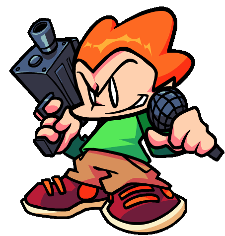
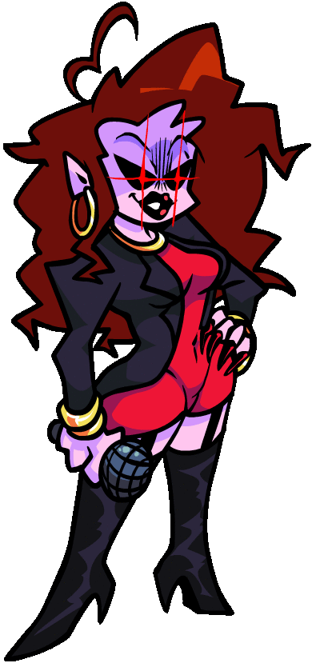
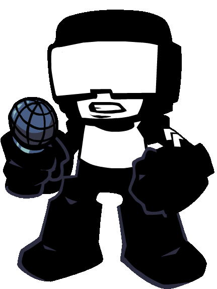
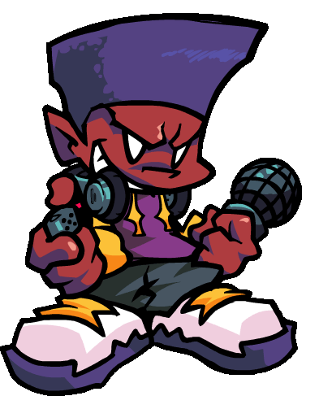

(Totorial)


Дівчина — другий голос Friday Night Funkin'. Вона є другорядним персонажем Boyfriend і першим суперником, з яким стикається, навчаючи гравця грати за допомогою її єдиної траси — Tutorial. Вона — партнерка Хлопця і донька Тата Дорогого та Мами Мірест, і вона підтримує Хлопця, коли він протистоїть її батькам та іншим персонажам, які намагаються їм заважати поводитися дивно.

Тато Дорогий егоїстичний, жорстокий і байдужий, адже він неодноразово намагався вбити Хлопця, не зважаючи на наслідки для його доньки. Як виконавець, він дивно гордий і зверхній. Він також здається дещо дріб'язковим, адже наймає Піко вбити Бойфренда після того, як той побив його в першому тижні. Однак він не такий злий, як його дружина Маммі Мірест, яку вважають набагато гіршою за Тата Дорогого.

Найпомітніша навичка Піко — володіння вогнепальною зброєю, яка є його основною зброєю. З ними він має надзвичайну точність і здатен використовувати два одночасно. Найчастіше його можна побачити з пістолетом-кулеметом, схожим на M10, але він також використовував інші типи зброї, такі як штурмові гвинтівки АК-47 та М16. Як показано у Friday Night Funkin', він може з точністю націлюватися на конкретні цілі і навіть стріляти, швидко крутячи зброю, не завдаючи випадково шкоди собі чи тим, кого не хоче вбивати. Його майстерність у стрільбі настільки велика, що дозволила йому знищити майже всю армію Танкмена.

Mommy Mearest — талановита поп-співачка, яка здається потужною як за здібностями, так і за статусом. Вона зверхня і горда як виконавиця, навіть зліша за свого чоловіка. Як мати, вона така ж надмірно опікує, як і Daddy Dearest, а можливо й більше, адже неодноразово намагається наражати життя хлопця під загрозу через те, що він зустрічається з Дівчиною. Усміхайся добре, хлопче! також показує, що вона запальна, жорстоко вдаряючи чоловіка кількома ножами за те, що той випадково вдарив її музичні колонки у ванну і вбив її струмом після того, як кинув хлопця об стіну, використовуючи фігурку як вуду-ляльку.

Танкмени — це солдати з монохромною кольоровою гамою; Усі їхні шоломи, уніформи, рукавички, штани та чоботи чорні, а шкіра, окуляри та жилети — білі. Більшість танкистів носять шоломи зі стандартними прямокутними окулярами, хоча виняткові деякі мають круглі окуляри. Під час треків Ugh і Guns на передньому плані двоє танкистів, які присідають на двох менших динаміках, що лежать поруч із великим динаміком, на якому сидить Дівчина. Вони обидва мають емблеми на руці і несуть гвинтівки, які направляють на Дівчину. Солдат зліва має круглі окуляри, а солдат справа — прямокутні.

Дарнелл — досвідчений піротехнік, який любить експериментувати з вибухівкою та вогнем. Хоча його канонічність є спірною, «Дарнелл грає з вогнем» нібито демонструє його навички у монтажі вибухівки та спаленні великих будівель, що також свідчить про його інтелект як супергенія. У фільмі він стверджує, що виготовляє свої бомби з добрива амонієвної нітрату та вибухових капсул. Оригінальні анімаційні спрайти Дарнелла в серії про Піко зображують його з пістолетом і ножем, що свідчить про його досвід із цими видами зброї. У Pico 2 Дарнелл використовує пістолет, щоб збити НЛО геттоботів. Крім того, Дарнелл цікавиться музикою, адже має діджейський програвач і навушники; його музична майстерність додатково проявляється у Friday Night Funkin'.

Daddy Dearest erfährt, dass seine Tochter Girlfriend kurz davor war, mit ihrem neuen Freund Boyfriend Sex zu haben. Allerdings billigt er nicht, dass die beiden zusammen sind, also stoppt er sie, bevor sie miteinander ausgehen können. Als ehemaliger Rockstar fordert er Boyfriend zu einem Rap-Battle heraus, das dieser sofort annimmt. Der Vater wird schließlich besiegt, und das Paar verlässt die Hauptbühne. Doch Daddy Dearests böswillige Absichten hören dort nicht auf, denn in Woche 3 engagiert er Pico, Nene und Darnell als Auftragskiller und befiehlt ihnen, Boyfriend als Rache für seine Niederlage zu töten. Allerdings gab er ihnen nur den Standort ihres Ziels, ohne ihnen zu sagen, wen sie töten mussten. Pico geht zum Ort, und zu seiner Überraschung stellt sich heraus, dass das Ziel Boyfriend ist, sein Ex-Freund. Anstatt seiner Aufgabe zu folgen, beschließt Pico, mit Boyfriend zu rap-Battlen, so wie sie es früher getan haben. In Woche 5 sind Freund und Freundin ins Einkaufszentrum gegangen, um den Weihnachtsmann im Einkaufszentrum zu treffen. Daddy Dearest erfährt diese Nachricht und nimmt den Weihnachtsmann im Einkaufszentrum als Geisel, um ihn daran zu hindern, zu petzen, und nimmt seinen Thron für sich und seine Frau Mommy Mearest an sich. [6] Als das Duo ankommt, fordern Daddy Dearest und seine Frau Boyfriend erneut zu einem weiteren Rap-Battle heraus, bevor sie schließlich durch Monster als Boyfriends Gegner ersetzt werden. In Woche 6 fängt Daddy Dearest Freund und Freundin in ein Dating-Spiel, während sie zusammen abhängen, vermutlich als ein weiterer Mordversuch auf Boyfriend. Spirit enthüllt außerdem, dass Daddy Dearest ihn vor einigen Jahren im Spiel gefangen hat und viele andere Menschen auf ähnliche Weise leiden ließ. Aus diesem Grund schwört er, aus dem Spiel auszusteigen und die Körper von Freund und Freundin "auszuleihen", um sich an Daddy Dearest zu rächen und alle anderen zu rächen, die mit ihm festsitzen. Kurz vor den Ereignissen von Woche 7 tricksen Daddy Dearest und Mommy Mearest Boyfriend und Girlfriend aus, damit sie in einen Urlaub fliegen, was sich als ein weiterer Versuch herausstellt, Boyfriend zu eliminieren. Das Flugzeug stürzt jedoch nach den Ereignissen eines unbenannten kommenden Levels ab, und Freund und Freundin landen auf dem Schlachtfeld der Panzerfahrer. Es stellte sich heraus, dass Freund und Freundin die ganze Zeit Tracker bei sich hatten, sodass die Eltern sicher sein konnten, dass Boyfriend bei dem Unfall gestorben ist, und um sicherzugehen, schickten die Eltern Pico, Nene und Darnell erneut, diesmal um zu bestätigen, dass Boyfriend gestorben war. Als das Trio am Ort ankommt, freuen sich Darnell und Nene, dass Boyfriend noch lebt, damit sie die Sache selbst beenden können. Doch genau wie in Woche 3 stoppt Pico sie und verstößt gegen seinen Job, indem er diesmal Boyfriend rettet, während er während Stress auf die Panzermannsarmee schießt. Deshalb bezahlt Daddy Dearest die Auftragskiller überhaupt nicht. Später beobachtet er sie in der Ferne während Wochenende 1, unsichtbar während des Levels.
Тато Дорогий дізнається, що його донька, Дівчина, збиралася зайнятися сексом зі своїм новим хлопцем, Бойфрендом. Однак він не схвалює їхні стосунки, тому зупиняє їх, перш ніж вони встигають завести стосунки. Будучи колишнім рок-зіркою, він викликає Хлопця на реп-батл, який той одразу приймає. Батько зрештою зазнає поразки, і пара залишає Головну сцену. Однак злі наміри Тата Дорогого на цьому не закінчуються, адже на третьому тижні він наймає Піко, Нене і Дарнелла як найманих вбивць і наказує їм убити Бойфренда як помсту за його поразку. Однак він лише дав їм місцезнаходження цілі, не сказавши, кого треба вбити. Піко приходить на місце, і на його подив виявляється, що ціллю виявляється Бойфренд, його колишній хлопець. Замість того, щоб виконати завдання, Піко вирішує реп-батл з Boyfriend, як вони робили в молодості. На п'ятому тижні хлопець і дівчина пішли до торгового центру, щоб зустрітися з Сантою. Тато Дорогий дізнається про це і тримає Торгового Санту в заручниках, щоб зупинити його від стукачів, забираючи його трон для себе та своєї дружини, Мами Мірест. [6] Коли дует прибуває, Дедді Дирест і його дружина знову кидають виклик Бойфренду на ще один реп-батл, перш ніж їх зрештою замінює Монстр як суперника Бойфренда. На 6-му тижні Daddy Dearest затягує хлопця і дівчину у гру знайомств, поки вони проводять час разом, ймовірно, як ще одну спробу вбивства хлопця. Дух також розкриває, що кілька років тому Дедді Діарест загнав його в гру і змусив багатьох інших страждати подібним чином. З цієї причини він клянеться вийти з гри і «позичити» тіла Хлопця і Дівчини, щоб помститися Тата Дорогому і помститися за всіх інших, хто з ним залишився. Безпосередньо перед подіями 7-го тижня Тато Дорогий і Мама Найменша обманом змушують Хлопця і Дівчину сісти на літак у відпустку, що виявляється ще однією спробою позбутися Хлопця. Однак літак розбивається після подій неназваного майбутнього рівня, і Хлопець з дівчиною приземляються на поле бою Танкменів. Виявилося, що Хлопець і Дівчина весь час мали трекери, тож батьки могли бути впевнені, що Хлопець загинув у аварії, і для впевненості батьки знову відправили Піко, Нене і Дарнелла, цього разу щоб підтвердити, що Хлопець загинув. Коли трійця прибуває на місце, Дарнелл і Нене радіють, побачивши, що Хлопець живий, щоб завершити справу самостійно. Однак, як і на третьому тижні, Піко зупиняє їх і йде проти своєї роботи, цього разу рятуючи Хлопця, стріляючи по армії танкистів під час стресу. Через це Дорогий Тато взагалі не платить найманим вбивцям. Пізніше він спостерігає за ними вдалині під час WeekendEnd 1, не помічаючи під час рівня.
Коли зробили цю ігру?
Vor den Ereignissen von Woche 3 engagierte Daddy Dearest Darnell, Nene und Pico, um Boyfriend zu töten. Als Pico die Aufgabe nicht erfüllte, wurde Darnell wütend auf ihn. In Woche 5 ist Darnell einer der vielen Zuschauer bei Boyfriends Rap-Battle mit Daddy Dearest und Mommy Mearest im Christmas Mall und tritt im Hintergrund von Cocoa und Eggnog auf. Obwohl Darnell in Woche 7 nicht physisch erscheint, ist er einer der Auftragskiller, die angeheuert wurden, um Boyfriends Leiche zu finden und zu bestätigen, dass er tot ist. Als Darnell entdeckt, dass er noch lebt, ist er sehr glücklich, da er die Gelegenheit hat, seinen Auftrag zu beenden und Boyfriend zu töten. [7] Pico verschont und rettet Boyfriend jedoch. Deshalb zahlt Daddy Dearest keinem der Auftragskiller, was Darnell und Nene in eine finanzielle Krise bringt und sie zur Rache veranlasst. [5] Während Wochenende 1 sprüht Darnell eine Wand an, nachdem er und Nene A-Bot auseinandergebaut hatten, um Teile von ihm zu verkaufen und mit seiner Hydraulikflüssigkeit einige nahegelegene Gebäude niederzubrennen. [8] Pico trifft auf sie und wird zu einem Rap-Battle gegen Darnell herausgefordert, wobei Nene zusieht. Während 2hot wirft Darnell auch Sprühdosenbomben auf Pico, die letzterer abschießt. Nach dem Rappen bereiten sich Darnell und Pico darauf vor, sich gegenseitig anzugreifen, aber Pico hat keine Munition mehr und Darnells Feuerzeug ist leer. Stattdessen regeln sie die Sache mit einem Faustkampf, der zunehmend gewalttätig wird, bis die beiden sich versöhnen und ihre Freundschaft retten. Sie gehen glücklich gemeinsam davon, bevor sie mit ihren Verletzungen zu Boden fallen.